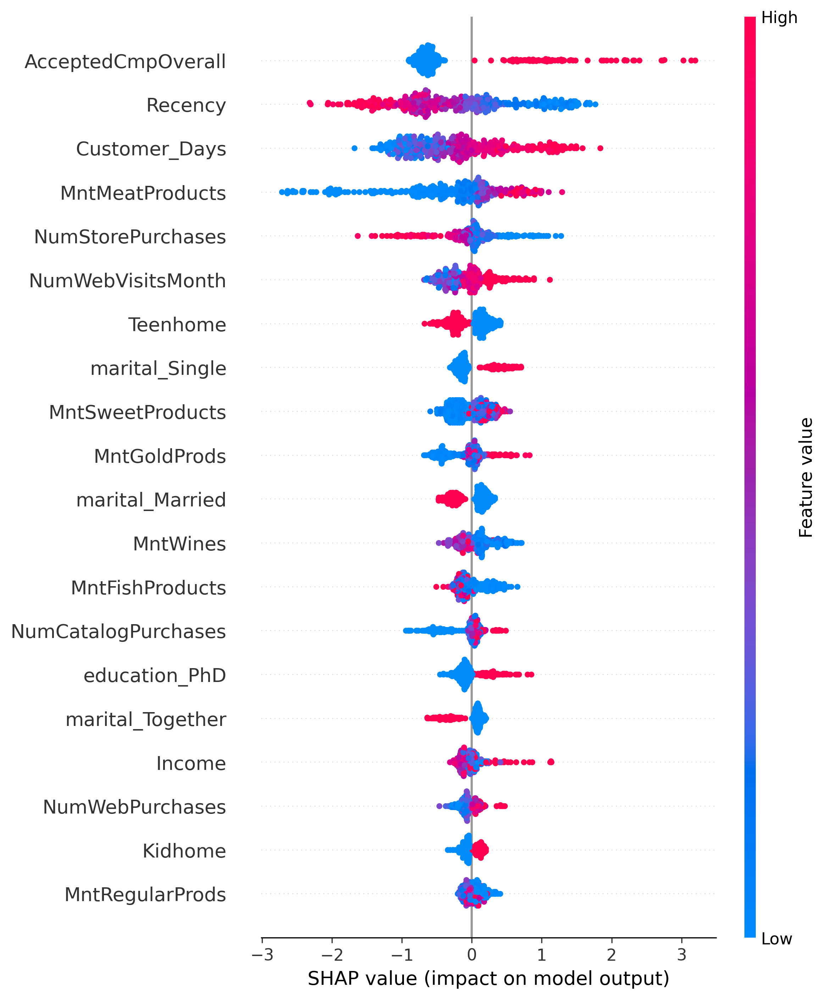

End-to-end marketing analytics project optimizing campaign ROI. Engineered RFM metrics and applied K-Means clustering for customer segmentation. Built an XGBoost predictive model and utilized SHAP values to uncover behavioral drivers, translating complex data into actionable business strategies.
Cleaned and analyzed a large dataset of global layoffs using MySQL.
Performed raw data cleaning (removing duplicates, standardizing data, handling nulls) and
conducted Exploratory Data Analysis to uncover trends, utilizing advanced SQL techniques like
CTEs, Window Functions, and Rolling Totals.
Business Goal: Designed to assist property investors in formulating a market entry
strategy for Amsterdam.
Key Analysis: Since historical transaction data was unavailable, the analysis pivots to
Market Positioning. It benchmarks pricing across neighborhoods, identifies demand
hotspots using review density, and analyzes competitor inventory (Room Type ratios).
Future Scope: The current framework focuses on spatial analysis but is designed to
incorporate daily booking data for future seasonality and dynamic pricing models.
Project Scope: Transformed raw survey data from 630+ professionals into an interactive market analysis dashboard.
Key Insights: Utilized Power Query for ETL processes to benchmark industry salaries and visualize the correlation between programming skills (Python/R) and career satisfaction.
Project Scope: Developed a dynamic dashboard to analyze customer demographics and purchasing patterns.
Key Insights: Leveraged Pivot Tables and Slicers to translate raw sales records into actionable insights, identifying key sales drivers such as commute distance and age groups.